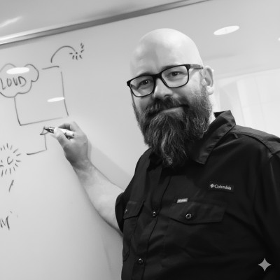

About
A studio shaped by years of learning what is enough, and what is too much
BramLabs is a product studio in Vordingborg, Denmark. We invent products, build them with AI, and release them to find out. Each product is its own company. What grows is shed off to stand on its own. What does not is closed down. The studio is the shared way of working behind them.
Origin
Where it started

Jimmi BramBramLabs was started by Jimmi Bram after twenty years of building software and running engineering organisations, including as CTO at Alm. Brand and in engineering leadership at Saxo Bank. The pattern from those years became the studio’s method: build the whole system early, prove value with real users, and keep the path to scale open.
The studio began as a lab for prototypes. When AI made building close to free, the interesting part of the work moved from the prototype to the good taste around it, and BramLabs was rebuilt around that. The products came first, then the philosophy, and the philosophy is revised whenever a product teaches us something.
The people behind each product are on that product’s own site. The studio does not put names on the door.
Structure
How the studio is set up
Products are companies
Each product has its own users, its own economics, and its own site. The decision to keep going is made per product, on that product’s numbers. A product that outgrows the studio leaves it. A product that does not is closed.
Building is shared
The way we build with AI, the tooling, the way we run infrastructure and support, and the taste, are the same across every product. That is what the studio is.
Friends of the house
Products begin inside the studio. Now and then one begins with a good friend of the house who owns a domain we do not, and we build it together. We do not build software for other companies.
Facts
- Legal entityBram Labs ApS
- Based inFragevej 58, 4760 Vordingborg, Denmark
- ProductsDocZoid, ToneTone
- Built withAI, end to end, since 2025